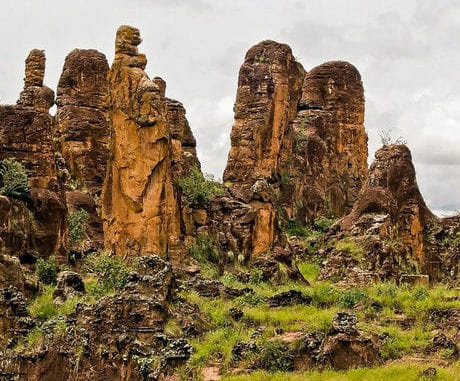

LES PICS DE SINDOU

- Les pics de Sindou ou aiguilles de Sindou sont une formation rocheuse de grès, aux parois abruptes et fortement érodées dans le Sud-Ouest du Burkina Faso. Ils culminent à 415 mètres d'altitude, ce qui en fait le deuxième point le plus haut du Burkina Faso après le mont Tenakourou.
- Situation Géographique
Le groupe de roches est situé à quelques centaines de mètres à l'est de la ville de Sindou, et à environ 40 kilomètres à l'ouest de la ville de Banfora, dans la province de la Léraba et la région des Cascades.
- Environement
La diversité des habitats dans leur région les rend importants pour la diversité biologique de la région. Ils sont protégés par la réserve naturelle du même nom.
- Tourisme
Ces pics sont l'une des attractions touristiques les plus populaires du pays. Une partie du site est accessible aux touristes par des sentiers pédestres. Plusieurs points d'observation sont aménagés sur les sommets. L'accès des visiteurs du site se fait par un parking, d'où partent les sentiers au sud des pics, accessible par la route régionale 21 au sud-est de la ville de Sindou.
- Culture
Dans les traditions sénoufos, ces pics sont considérés comme un lieu mystique et de protection contre les dangers.